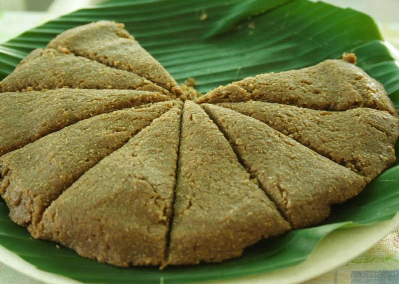

WESTERN VISAYAS FOOD GUIDE
Welcome to Aklan
Coconut, coast, and festival flavorsDISCOVER AKLAN
About Aklan
Aklan is a province in Western Visayas, home to Kalibo, the lively Ati-Atihan Festival, and the white sands of Boracay.
Its kitchens draw on what the land and sea provide: native chicken, young coconut, banana trunk, and fresh catch from the coast. Dishes like inubarang manok are slow, comforting meals, while kinilaw and grilled oysters keep things bright and simple.

TASTE OF AKLAN
Signature Dishes
Scroll sideways to explore the local favorites.
Inubarang Manok
A traditional-style chicken dish featuring ubad, or the tender inner core of a banana trunk, cooked with coconut milk and aromatics.
Inubarang Manok is a comforting dish associated with parts of Western Visayas. It combines chicken with finely sliced ubad, ginger, garlic, onion, and sometimes coconut milk. The banana core adds a mild flavor and tender texture to the stew.
Ingredients
- 500 g chicken, cut into serving pieces
- 2 cups thinly sliced ubad
- 1 cup coconut milk
- 1 onion, chopped
- 4 cloves garlic, minced
- 1 thumb-sized ginger, sliced
- 1 stalk lemongrass, bruised
- 2 cups water or chicken broth
- Salt and pepper to taste
- 1 tablespoon cooking oil
Instructions
- Heat oil in a pot. Sauté garlic, onion, and ginger until fragrant.
- Add the chicken and cook until lightly browned.
- Pour in water or broth, add lemongrass, and simmer until the chicken is nearly tender.
- Add the sliced ubad and continue cooking until tender.
- Pour in the coconut milk and simmer gently until the chicken is fully cooked.
- Season with salt and pepper. Serve hot with rice.

Kinilaw na Isda
Fresh fish prepared with coconut vinegar, calamansi, ginger, red onions, and chili peppers.
Kinilaw na Isda is a Filipino preparation of fish dressed in an acidic mixture, often using vinegar and calamansi. Aromatics such as ginger, onion, and chili add flavor. It is usually served chilled as an appetizer or a refreshing seafood dish.
Ingredients
- 300 g very fresh fish suitable for raw consumption
- 1/2 cup coconut vinegar
- 2 tablespoons calamansi juice
- 1 small red onion, thinly sliced
- 1 thumb-sized ginger, finely sliced
- 1–2 chili peppers, sliced
- Salt and pepper to taste
Instructions
- Keep the fish refrigerated while preparing the other ingredients.
- Cut the fish into small, even cubes using clean utensils.
- Place the fish in a clean bowl and add the vinegar and calamansi juice.
- Add onion, ginger, and chili. Season lightly with salt and pepper.
- Cover and refrigerate briefly before serving cold.
Food safety: Acidic marinade does not reliably kill parasites or harmful bacteria. Use fish specifically handled for raw consumption; cooking the fish thoroughly is the safer option.

Inihaw na Talaba
Fresh oysters grilled in their shells and served with spicy vinegar and calamansi dip.
Inihaw na Talaba is a simple seafood dish made by grilling oysters until thoroughly cooked. The natural briny flavor pairs well with a dipping sauce made from vinegar, calamansi, garlic, onion, and chili. It is a popular way to enjoy coastal seafood.
Ingredients
- 1 kg fresh oysters in their shells
- 1/4 cup vinegar
- 2 tablespoons calamansi juice
- 2 cloves garlic, minced
- 1 small onion, chopped
- 1 chili pepper, sliced
- Salt to taste
Instructions
- Scrub the oyster shells under clean running water.
- Prepare a clean grill over medium-high heat.
- Arrange the oysters on the grill and cook until the shells open and the meat is thoroughly cooked.
- Discard oysters that do not open during cooking.
- Mix vinegar, calamansi, garlic, onion, chili, and a little salt for the dipping sauce.
- Serve the cooked oysters hot with the dipping sauce.

Inihaw na Tuna
Fresh tuna grilled until cooked through and served with a calamansi and soy sauce dip.
Inihaw na Tuna is a simple coastal dish of tuna steaks grilled over hot coals. The fish is lightly seasoned so its natural flavor stands out, then served with a sharp dip of calamansi and soy sauce. Fresh grilled seafood like this is a favorite around Boracay and Aklan's coast.
Ingredients
- 500 g fresh tuna steaks, about 2 cm thick
- 3 cloves garlic, minced
- 1 tablespoon calamansi juice
- 1 tablespoon cooking oil
- Salt and pepper to taste
- Dip: 3 tablespoons soy sauce, 2 tablespoons calamansi juice, 1 chili pepper, sliced
Instructions
- Pat the tuna dry. Rub with garlic, calamansi juice, oil, salt, and pepper.
- Let it rest for 10 minutes.
- Heat a clean grill to medium-high and lightly oil the grate.
- Grill the tuna for 3 to 4 minutes per side until cooked through.
- Mix the soy sauce, calamansi juice, and chili for the dip.
- Serve the tuna hot with the dip and steamed rice.

Baye-baye
A sweet Visayan rice delicacy made from toasted glutinous rice, coconut, and sugar.
Baye-baye is a traditional Visayan kakanin, or native sweet, made with glutinous rice and coconut. The rice is toasted for a nutty aroma, then cooked with coconut milk and sugar until thick and chewy. It is a snack that goes well with coffee or tea.
Ingredients
- 1 cup glutinous rice (malagkit)
- 1 cup young coconut (buko) meat, shredded
- 1 1/2 cups coconut milk
- 1/2 cup brown sugar
- A pinch of salt
- Banana leaves or a greased tray
Instructions
- Toast the rice in a dry pan over low heat until golden and fragrant. Let it cool.
- Grind the toasted rice into a coarse powder.
- In a pot, heat the coconut milk with the sugar and salt until the sugar dissolves.
- Stir in the ground rice and buko. Cook on low heat, stirring often, until very thick.
- Spread the mixture on a tray lined with banana leaves and let it cool.
- Cut into squares and serve.
LOCAL TIP